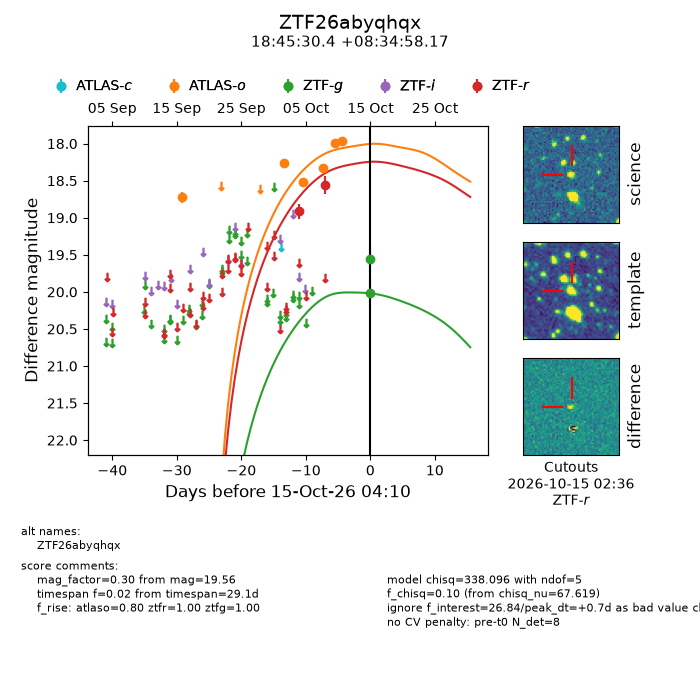
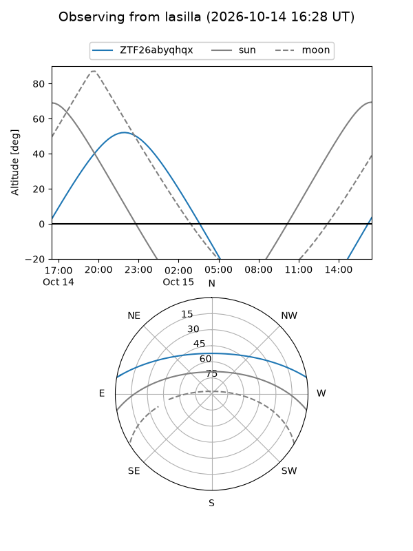
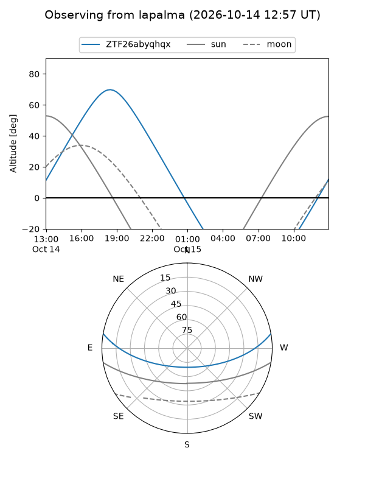
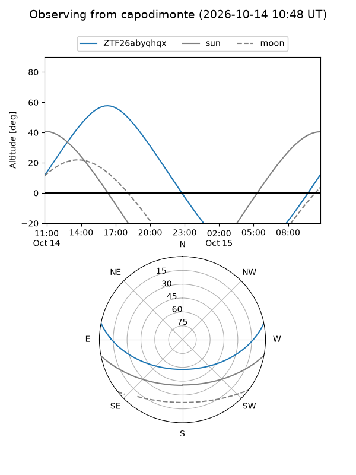
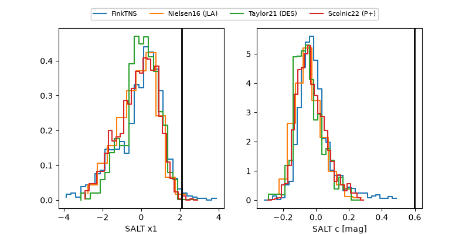

ZTF26abyqhqx
Target ZTF26abyqhqx at 2026-10-15 04:11
Aliases and brokers:
FINK-ZTF: ztf.fink-portal.org/ZTF26abyqhqx
Lasair-ZTF: lasair-ztf.lsst.ac.uk/objects/ZTF26abyqhqx
ALeRCE-ZTF: alerce.online/object/ZTF26abyqhqx
Direct TNS query: direct search
alt names
ZTF26abyqhqx (ztf,fink_ztf)
Coordinates:
equatorial (ra, dec) = 281.3767,+8.58283
equatorial (HMS+DMS) = 18:45:30.42,+08:34:58.17
galactic (l, b) = (39.9197,+5.21088)
Flags:
peak dt: +0.7
CV pen: 0.5600142416429352
Photometry:
last atlaso=17.96, ztfg=19.56, ztfr=18.56
6 atlaso, 2 ztfg, 2 ztfr detections
Lightcurve

Visibility



Additional plots
